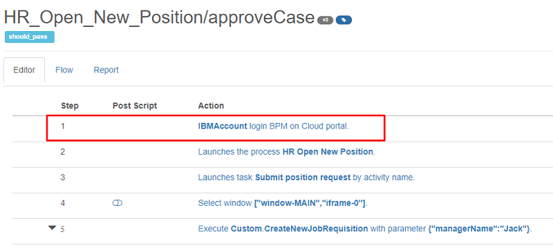
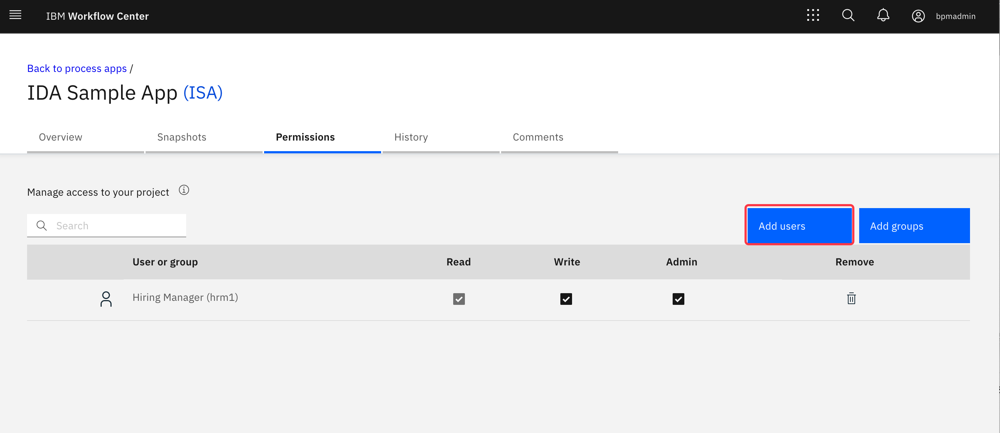
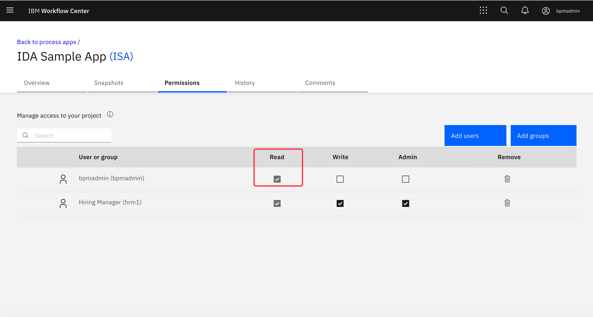
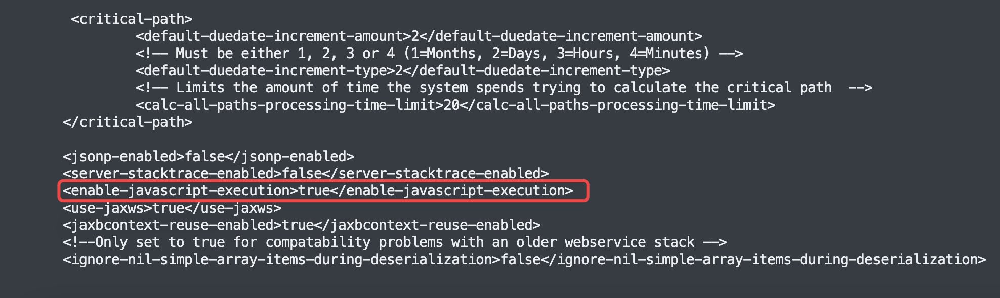

Frequently Asked Questions
FAQ about IDA
- FAQ: Where can I get information about hardware and software requirements of IDA?
- Answer: See System Requirement doc
- FAQ: Could IDA be used to do performance testing?
- Answer: Yes, IDA leverage Gatling to do performance testing.
- FAQ: Can Checkstyle or Testing component be integrated individually with the existing external CI/CD pipeline?
- Answer: YES, you could define Testing only, Checkstyle only pipeline and then leverage REST APIs for integration. More details please refer to Architecture doc and IDA REST APIs doc
- FAQ: Could IDA use Oracle or SQL Server as a DB besides DB2 and MySQL in the supported list?
- Answer: Technically, all kinds of relational database can be supported by IDA. For now, IDA is tested on MySQL, PostgreSLQ, DB2 and Oracle.
- FAQ: Could IDA WAR be deployed on the BAW WAS server?
- Answer: NO. The BAW WAS server COULD be only used by the Workflow project if it’s not a licensed WAS server.
- FAQ: Could we use IE to record testing?
- Answer: NO. The recording feature only supports Chrome or Firefox. IE could be used to replay the recorded test case. Just need to set up a Selenium server on Windows to run regression testing.
- FAQ: Could we import Selenium test projects to IDA?
- Answer: NO.
- FAQ: Does IDA support BPM adv (BPEL) testing and static analytic?
- Answer: NO. The testing and checkstyle of IDA only supports BPM std.
- FAQ: Does IDA support IBM BAW v18?
- Answer: YES. Refer to Software Prerequisites in System Requirement doc
- FAQ: Can we customize the rules of Checkstyle?
- Answer: YES. Refer to the doc Customize Checkstyle Rules and Architecture doc about integration.
- FAQ: Does the CheckStyle feature detect issues that cannot be detected by the Process Designer code validation?
- Answer: YES. Checkstyle is BAW code static analytic. The PD validation is to do “compiling validation”.
- FAQ: Could IDA test process definitions in toolkits or just the ones in process applications?
- Answer: YES. The user could select a toolkit when creating a test case. See doc
- FAQ: If the team built some AngularJS code inside the coaches, can IDA support its testing?
- Answer: YES. We could use Custom Recorder to capture all UI controls if the OOTB recorder does not record it correctly.
- FAQ: What does the customer get under the contract: source code of IDA or the packaged compiled code?
- Answer: The packaged compiled code without source code.
- FAQ: Does IDA support heritage coaches which are widely used in BPM v8.x?
- Answer: YES.
- FAQ: Does IDA support BPMoC?
- Answer: YES. But each test case needs to insert a command LoginBPMOC as the first step because the BPMOC environment needs to log in before visiting.

- Answer: YES. But each test case needs to insert a command LoginBPMOC as the first step because the BPMOC environment needs to log in before visiting.
- FAQ: Can a sample report be shared with us so we want to look at it more closely off-line to understand what checkstyle can analyze?
- Answer: YES. You could share one TWX file with us, and we could use IDA to generate an offline report.
- FAQ: Is there technical documentation available for IDA?
- Answer: All have been published on Git doc
- FAQ: Is there a number of users limitation on IDA?
- Answer: No limitation on the number of users. The IDA asset license is granted to set up one IDA environment.
- FAQ: How does Checkstyle of IDA compare with IBM App Scan?
- Answer: The app scan only checks for security vulnerabilities, and the checkstyle performs static code analysis on BAW TWX.
- FAQ: Shall I record all test cases again if I add a new field or change its position?
- Answer: You could use group command to manage test cases. In that case, you could just manually modify the group command if adding one new field. Or record group command steps again and not need to update all test cases one by one.
- FAQ: Does IDA support migration from versions which are not previous to the current release? For example, 2.2.1 to 2.2.4?
- Answer: YES. Though the intermediary SQL scripts must be executed for each consecutive version we skip. Refer to step one in the migration doc.
- FAQ: Why can’t I launch the BP3 human services on the firefox grid?
- Answer: The firefox selenium driver that we used (geckodriver-v0.23.0) cannot launch the BP3 human services when the selenium version is 3.14.0. This will be fixed in the next release.
- FAQ: Do we need the BAW admin to execute WAS commands permanently, or can we use another user with similar/less permissions in configuration?
- Answer: We need the WAS admin role to execute WAS commands to do deployment if the version is BAW v18 or less. If it’s BAW v18.0.0.2 or better, there is no need to configure a WAS Admin in IDA.
- FAQ: There are only user and admin roles in the doc. Can we define more roles?
- Answer: Yes, e.g., You need an infrastructure ADMIN role to do all server configurations. It could be done through customization for role permission control.
- FAQ: Can we use a different user for the REST API configuration?
- Answer: YES. Please make sure the user is in the group either tw_authors or tw_admins.
- FAQ: Does IDA support window.confirm in a plugin? If not, what should I do if the result of window.confirm influences the business logic?
- Answer: No. They aren’t supported in IDA plugins and work on the server by adding confirmOk and confirmCancel commands. About replaying in a plugin, you need to click the OK or Cancel button manually.
- FAQ: I got errors showing I don’t have access permission to the Process App when using Checkstyle and Analyzer, what should I do?
- Answer: Please make sure the IDA Rest User is in the group either tw_authors or tw_admins. If it still doesn’t work, you can try to add permissions for your Rest User to access the Process App.


- Answer: Please make sure the IDA Rest User is in the group either tw_authors or tw_admins. If it still doesn’t work, you can try to add permissions for your Rest User to access the Process App.
-
FAQ: I can’t be assigned to the tw_admins group because of security factors on the PS server, what should I do to test Process Apps on PS?
-
Answer: Do the following action to allow non tw_admin users to access the REST.
-
Stop the servers of your IBM BAW PS environment.
-
Start the scripting client in disconnected mode as described in update BPM Config command.
-
Run the following commands:
wsadmin> AdminTask.updateBPMConfig( [ '-create', '/server' ] wsadmin> AdminTask.updateBPMConfig( [ '-create', '/server/enforce-authorization-check-for-ps-model-data', '-xNodeValue', 'false' ] ) wsadmin> AdminConfig.save() -
Restart the servers of your IBM BAW environment.
-
-
-
FAQ: I got the wrong character encoding in the CSV file, what should I do?
- Answer: See Test Case Data Binding
- When you create a new pipeline, why do I have to tie it to a snapshot? If I create a new snapshot, do I need to then update all my pipelines to have that new snapshot referenced?
- Answer: The snapshot in the first stage is the default snapshot that will be used to pull all process app information and run the pipeline steps. If the stage begins with a “snapshot” step, then the newly created snapshot will be used to run the follow-up test/checkstyle steps.
- Why do I need to specify the snapshot acronym when I want to run the pipeline?
- Answer: The snapshot acronym is optional. If the user specifies a snapshot acronym name when starting the pipeline, then the pipeline will skip the “snapshot” step and use this snapshot acronym to run the test/checkstyle steps.
- Can I run test/checkstyle against tip/default in the pipeline?
- Answer: Yes. If the tip option is checked in the test/checkstyle step, then it will always run against the tip/default.
- Can I specify a PS as the first stage of a pipeline?
- Answer: Yes. The first stage can be either PC or PS. If the first stage is PC, then a snapshot step can be added, and you can add online/offline deployment in the second PS stage. If the first stage is PS, then you cannot add a snapshot step, and only offline deployment is supported.
- How to enable the JavaScript Expression execution?
- Answer: Please follow the steps below:
- Stop the BAW environment.
- Change the enable-javascript-execution value in the 99Local.xml file. The file path is
PROFILE_DMGR_HOME\config\cells\cell_name\nodes\node_name\servers\server_name
[process-center|process-server]\config\system\99Local.xml. - Start the BAW environment.

- Answer: Please follow the steps below:
- Why is the snapshots part missing when I search for snapshots in the Admin Tool/Comparison?
- Answer: Due to the BAW REST API’s limitation on the number of returned results, not all results are returned if the number of snapshots (named + unnamed) is huge. You can try to clean up the unnamed snapshots.
- Do you have any sizing recommendation for the Selenium Hub? Can you explain what influences the number of test cases that can run in parallel?
See docs. Some suggestions about Selenium Hub sizing are as follows:
- Max concurrent sessions per Selenium node: #CPU cores and # of maxSession configured on the Selenium node
- Memory consumption after startup:
Selenium Hub: 400M
Per Selenium browser: 300M
- Memory consumption running 1 test case:
Selenium Hub: 600M
Per Selenium browser: 1G
- Memory consumption running 30 test cases:
Selenium Hub: 1G
Per Selenium browser: 1G
Test cases are queued on IDA if no available Selenium browser sessions. The max concurrent test cases running in Selenium is also limited by the IDA server’s performance. IDA’s max threads > Selenium’s max threads concurrency. When test cases increase and their run time increases significantly, try to increase the #CPU cores per Selenium node and/or connect a new Selenium node to the Selenium hub.
- Max concurrent sessions per Selenium node: #CPU cores and # of maxSession configured on the Selenium node
- How to run test cases in a plugin or Selenium when the browser prompts for choosing client certificates?
The browser prompts to let the user choose a client certificate when the web server requires mutual TLS authentication. You need to manually choose the certificate on your machine or the Selenium server once or configure your browser to auto-select client certificates. The items to check:
- There exist client certificates on your machine or the Selenium server for the web browser to use. See the reference here.
- Configure your browser to auto-select client certificates, for example, configure AutoSelectCertificateForUrls for Chrome. See the reference here.
- On Selenium, make your browser run in headful mode. For example, Chrome does not support selecting or using client certificates in headless mode.
- How to clean test screenshots generated by pipeline builds when disk space is full?
IDA supports nightly cleanup of pipeline build reports - you can set Max # of builds to keep and Days to keep builds on Settings. To clean old test screenshots that are out of the scope of the nightly job, use the commands below. For example, to clean test screenshots older than 45 days:
find /var/ida/data/screenshots/pipeline/Project* -maxdepth 0 -type d -ctime +45 -exec rm -r "{}" \; -
How to deal with WebSphere Application Server SOAP Connection Issues: “java.lang.SocketException: Connection reset” or “java.net.SocketTimeoutException: Read timed out”?
- Answer: Please follow the steps below, refer to the doc Connection timeout when running a wsadmin script:
- Open the Dmgr profile SOAP properties file,
/Dmgr01/properties/soap.client.props. - Edit the SOAP timeout value to 0 (no limit), by default, the value is 180: com.ibm.SOAP.requestTimeout=0
- Open the AppSrv profile SOAP properties file,
/AppSrv01/properties/soap.client.props. - Edit the SOAP timeout value to 0 (no limit), by default, the value is 180: com.ibm.SOAP.requestTimeout=0
- Restart the whole environment.
- Open the Dmgr profile SOAP properties file,
- Answer: Please follow the steps below, refer to the doc Connection timeout when running a wsadmin script:
- How to test a non-exposed human service?
A non-exposed human service can only be tested in a Workflow Center environment. Before testing, assign the process application (or toolkit if the human service is created in a toolkit) Read permission to the test account in Workflow Center. A non-exposed human service cannot be tested in a Workflow Server environment. -
Can I access IDA web URLs using HTTP?
No, HTTP access is not supported by IDA. Please access IDA web URLs using HTTPS. If there’s proxy server in front, please configure the proxy server to point to HTTPS port of IDA web. -
How to ensure that IDA is normal after installation or upgrade?
- Post-upgrade checklist:
- Check the IDA version in the footer.
- Check IDA settings in the “Administration/Settings” page:
- Check the “Data Path” can be accessed, and no warnings.
- If LDAP Authentication is enabled, then check the LDAP configuration, and test the connection.
- If ODM rule engine is enabled for Checkstyle, please deploy the latest checkstyle ruleset (https://sdc-india.github.io/IDA-doc/checkstyle/checkstyle-deploy-checkstyle-ruleset.html) and then check the ODM configuration, and test the connection.
- If kubernetes is configured, then check the kubernetes configuration, and test the connection.
- Test BAW Server Connection in the “Administration/BAW Configuration” page.
- Test Selenium Grid Connection in the “Administration/Selenium Grid Configuration” page.
- Check the IDA browser plugin is upgraded to latest version (https://sdc-india.github.io/IDA-doc/installation/installation-installing-ida-application.html#step-3-installing-ida-browser-plug-in).
- Check “Test” feature by importing and executing sample test project (https://sdc-india.github.io/IDA-doc/test/test-import-execute-sample-test-project.html).
- Check “Checkstyle” feature by analyzing sample BAW application (https://sdc-india.github.io/IDA-doc/checkstyle/checkstyle-analyze-workflow-projects-with-checkstyle.html).
- Post-upgrade checklist:
- Deployment using pipeline fails, and the log shows “Exception was thrown when execute the ssh command: mkdir -p /tmp exception message: Auth fail”?
- Answer: This is because the configured SSH user does not have permission to create a directory. Please give the user appropriate permissions.